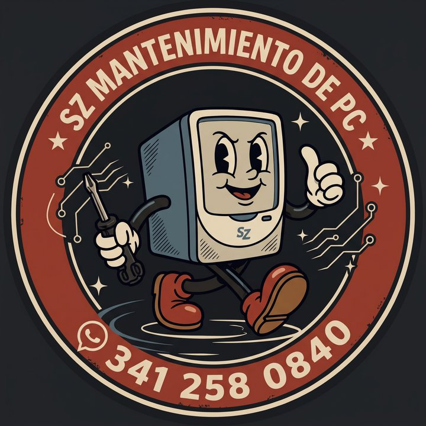
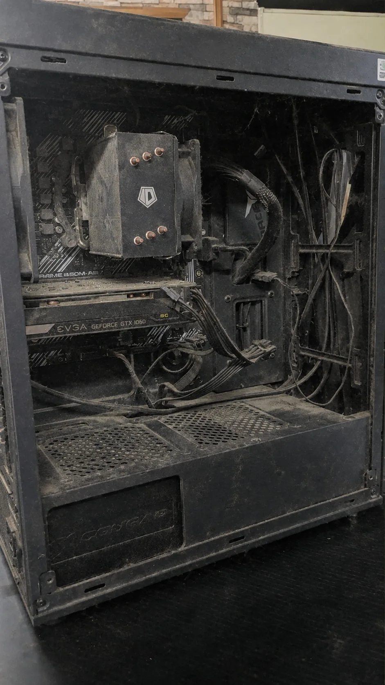

ARMADO DE PC
Armado gamer y de oficina
Un equipo pensado para lo que necesitás: juego, trabajo o uso diario.
Armado, limpieza y puesta a punto para que tu PC vuelva a estar a la altura de tus días.
Escribinos 341 258 0840
Contanos qué necesita tu equipo. Revisamos juntos el próximo paso, sin vueltas.
Un equipo pensado para lo que necesitás: juego, trabajo o uso diario.
Instalación y configuración de Windows, drivers y software.
Limpieza de componentes y reemplazo de pasta térmica.
Ajustes para que el sistema funcione de manera más fluida.
Orientación para elegir componentes compatibles con tu equipo.
El polvo y el calor son los peores enemigos del hardware. Una limpieza a fondo y el cambio de pasta térmica de alto rendimiento le devuelven la vida a tu equipo.

Antes · polvo acumulado y riesgo térmicoGaming o trabajo: te ayudamos a pensar el armado y a elegir componentes que tengan sentido para el uso que le vas a dar.
Escribinos por WhatsApp o completá el formulario para recibir un diagnóstico claro y sin vueltas en Rosario.
Completá tus datos y te respondemos por WhatsApp a la brevedad.